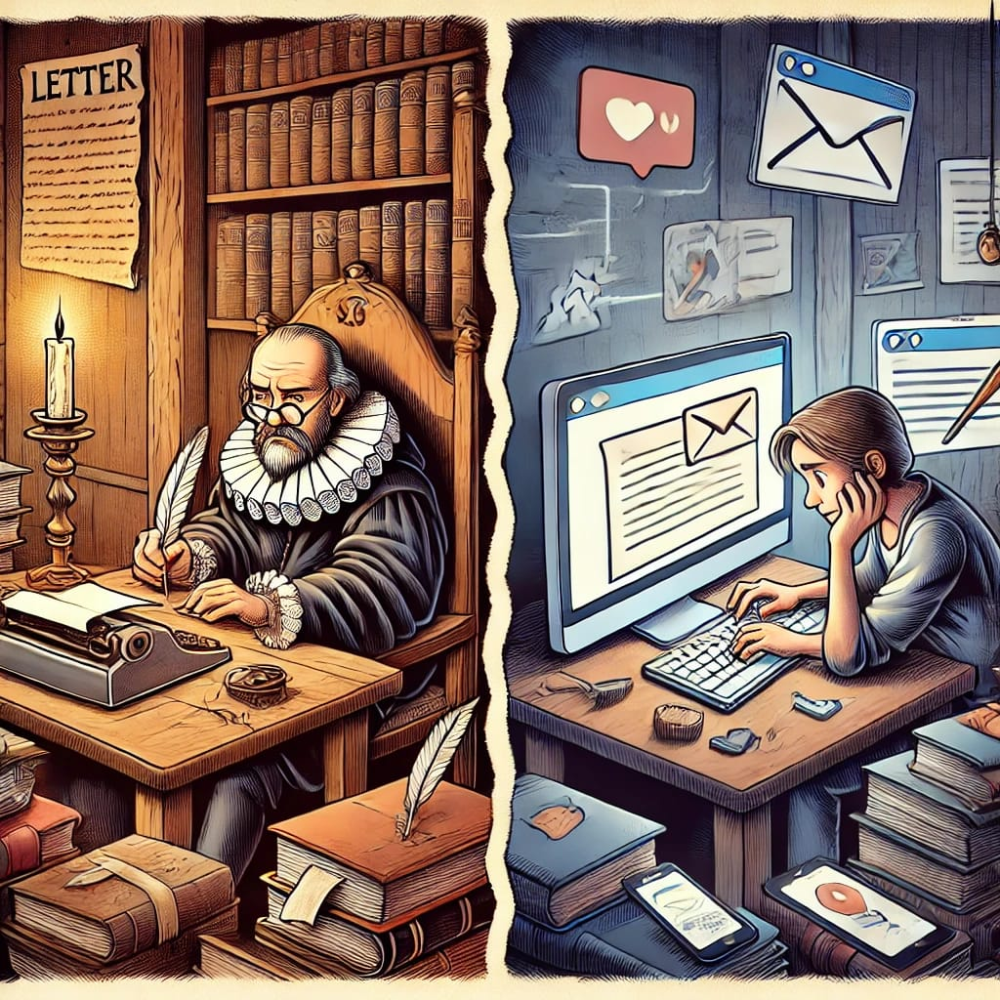

Cover letters in manuscript submissions: Useless tradition or missed opportunity?
![]()
The cover letter, a traditional element in the scientific submission process, seems to hold varying levels of relevance in the current landscape. As a researcher and editor-in-chief, I observe an intriguing question: does the cover letter still fulfill its role, or has it become merely a procedural formality?
Many authors treat the cover letter as a low-priority item, copying generic templates such as “This work is not under consideration elsewhere,” “This work is original,” or “The authors agree with the submission,” or writing rushed texts that add little value to the submission. Short phrases like “Please review my article” or “I need to publish my article quickly” reflect a limited understanding of the strategic potential of this document.
In contrast, editors often have little time to pay attention to superficial or generic letters, fueling a vicious cycle: authors don’t value the cover letter because they believe editors don’t read it, and editors don’t read it because the letters provide no relevant content.
Ideally, the cover letter should serve as a tool to highlight the relevance and originality of the manuscript, facilitating the editor’s initial decision on whether to send the paper for review. However, in an increasingly automated and metric-centered editorial system, some question whether it truly makes a difference. Neglecting to write a well-crafted letter means missing an opportunity to communicate directly with the editor and emphasize the merits of the work.
Conversely, writing anything merely to fulfill protocol can be worse than sending nothing at all. A poorly written letter can leave a negative impression, suggesting a lack of care or commitment from the author. A good cover letter does not need to be lengthy but should be strategic, personalized, and focused on the strengths of the work and its alignment with the journal’s scope.
The cover letter is still relevant, but its value depends on how authors and editors perceive it. Perhaps the question is not simply whether we should write the letter, but how we can transform this traditional element into something truly useful and strategic in the modern editorial process.
So, where do you stand? Are you the author who sees the cover letter as a strategic opportunity or merely a procedural formality? As an editor, do you value personalized, thoughtful letters, or have you resigned to ignoring them altogether?

Posted on LinkedIn. Log in and discuss!
Back to top